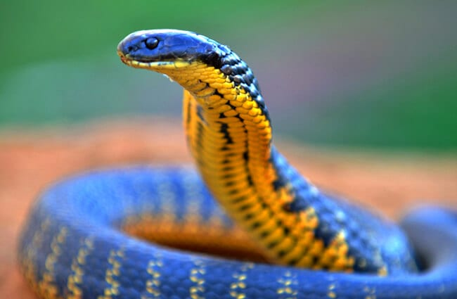
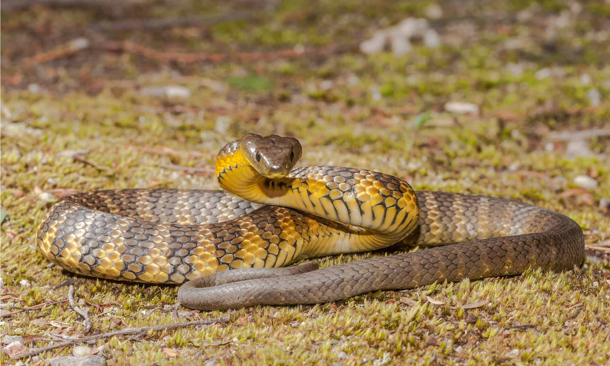

.jpg)
.jpg)

งูเสือ (Tiger Snake)
ชื่อวิทยาศาสตร์: Notechis scutatus
ลักษณะทั่วไป
เป็นงูพิษในตระกูล Elapidae (ตระกูลเดียวกับงูเห่า งูจงอาง และงูสามเหลี่ยม) ซึ่งขึ้นชื่อเรื่องความหลากหลายทางสรีรวิทยา ความหนาแน่นของมวลร่างกาย และความสามารถในการปรับเปลี่ยนลักษณะทางกายภาพตามสภาพแวดล้อมที่อยู่อาศัย ความยาวลำตัวเฉลี่ยของงูเสือวัยเจริญพันธุ์จะอยู่ที่ 1.1 ถึง 1.5 เมตร ในประชากรบางพื้นที่ โดยเฉพาะกลุ่มประชากรเกาะ (เช่น เกาะ Chapell หรือเกาะขนาดย่อยรอบออสเตรเลีย) ตัวผู้ที่มีอายุมากอาจเติบโตได้ยาวถึง 1.8 ถึง 2.1 เมตร งูเสือจัดเป็นงูที่มีลำตัวหนา มวลร่างกายสูง (Stout and Muscular) ลำตัวมีลักษณะกลมแต่แบนเล็กน้อยบริเวณหลัง (Dorsoventrally compressed) ทำให้ดูเป็นงูที่มีพละกำลังมาก ไม่ได้ยาวเพรียวบางเหมือนงูต้นไม้ทั่วไป งูเสือที่เติบโตเต็มที่ในธรรมชาติมักมีน้ำหนักตั้งแต่ 0.8 ถึง 1.5 กิโลกรัม แต่ในประชากรเกาะบางแห่งที่ยึดนกทะเลเป็นอาหารหลัก ตัวเต็มวัยอาจมีน้ำหนักมหาศาลพุ่งสูงได้ถึง 2.5 ถึง 3 กิโลกรัม หัวของงูเสือมีความกว้าง ชัดเจน และแยกออกจากคอได้อย่างเห็นได้ชัด มีรูปร่างทแยงมนเล็กน้อย ไม่เป็นสามเหลี่ยมแหลมเปี๊ยวแบบงูหางกระดิ่ง แต่จะกว้างและหนาแน่น เมื่อถูกคุกคาม งูเสือมีความสามารถในการขยายโครงสร้างคอและลำตัวส่วนบนให้แบนกว้างออกคล้ายกับการแผ่แม่เบี้ยของงูเห่า (แม้จะไม่อยู่ในสกุล Naja) การแผ่ลำตัวนี้เป็นการขยายซี่โครงส่วนคอเพื่อทำให้ตัวเองดูตัวใหญ่ขึ้น ชูหัวขึ้นเหนือพื้นเล็กน้อยพร้อมส่งเสียงขู่ฟ่อๆอย่างดัง เกล็ดบนหัวมีขนาดใหญ่ เรียบเนียน และจัดเรียงอย่างเป็นระเบียบ โดยเกล็ด frontal มีขนาดกว้างและเป็นรูปโล่ ดวงตามีขนาดปานกลางถึงใหญ่ ม่านตา (Pupil) มีลักษณะ กลมสนิท (Round Pupils) ไม่ใช่แนวตั้งเหมือนงูพิษงูเอี่ยวหรืองูเขียวหางไหม้ สะท้อนให้เห็นถึงพฤติกรรมการออกหากินทั้งในเวลากลางวันและยามพลบค่ำ ขอบม่านตามักมีสีน้ำตาลทองหรือสีส้มอมน้ำตาลล้อมรอบ ลักษณะเด่นที่สุดของงูเสือคือความหลากหลายทางสีสันและลวดลาย (Extreme Color Polymorphism) ซึ่งแปรผันไปตามภูมิศาสตร์ สภาพอากาศ และถิ่นที่อยู่เพื่อประโยชน์ในการอำพรางตัวและการดูดซับความร้อนจากแสงอาทิตย์ เกล็ดลำตัวด้านบน (Dorsal scales) มีลักษณะเรียบร้อย เป็นมันวาว กึ่งเรียบ (Smooth) ไม่มีสันขรุขระ แถวเกล็ดรอบกลางลำตัว (Mid-body scale rows) มักมีจำนวน 17 ถึง 19 แถว เกล็ดใต้ท้อง (Ventral scales) มีขนาดใหญ่และกว้าง มีจำนวนประมาณ 140–190 เกล็ด ช่วยในการยึดเกาะพื้นผิวที่หลากหลายตั้งแต่ดินโคลน หิน ไปจนถึงเปลือกไม้ ลำตัวมีลายพาดขวาง (Crossbands) เป็นแถบชัดเจนตลอดแนวยาวตั้งแต่คอจนถึงปลายหาง แถบลายขวางมีจำนวนตั้งแต่ 25 ถึง 60 แถบ ขึ้นอยู่กับแต่ละตัวและสายพันธุ์ย่อย สีของแถบลายสลับมีตั้งแต่ สีเหลืองมะนาว, สีครีม, สีส้มสด, สีน้ำตาลทอง ไปจนถึงสีเขียวมะกอก ตัดกับสีพื้นของลำตัวที่เป็นสีน้ำตาลเข้ม สีเทา หรือสีดำสนิท
งูเสือธรรมดา (Common Tiger Snake): พบตามแผ่นดินใหญ่ตอนใต้ มีลายพาดขวางสีเหลืองสลับดำหรือน้ำตาลชัดเจนคล้ายลายของเสือโคร่ง
งูเสือดำเกาะ/แทสเมเนีย (Black/Melanistic Variant): งูเสือที่อาศัยอยู่ในเขตอากาศหนาวเย็น เช่น เกาะแทสเมเนีย หรือกลุ่มเกาะใน Bass Strait มักมีลำตัวสีดำสนิททั้งตัว (Melanism) โดยไม่มีลายพาดขวางเลย หรือมีลายบางมากๆ การที่มีลำตัวสีดำสนิทช่วยให้พวกมันดูดซับความร้อนจากแสงแดดอันน้อยนิดในเขตหนาวได้รวดเร็วและมีประสิทธิภาพสูงสุด
ใต้ท้อง (Ventral color): สีใต้ท้องมักเป็นสีสว่างกว่าลำตัวด้านบน มีตั้งแต่สีเหลืองสด, สีครีม, สีอมส้ม ไปจนถึงสีเทาอ่อนในกลุ่มตัวสีดำ
หางมีลักษณะยาว เรียว ค่อยๆ แคบลงจนถึงปลายหาง เกล็ดใต้หาง (Subcaudal scales) ส่วนใหญ่เป็นแผ่นเดียวตลอดแนวยาว มีระบบเขี้ยวพิษแบบ Proteroglypha คือ มีเขี้ยวพิษยึดติดตรึงอยู่กับที่บริเวณส่วนหน้าของกระดูกจาง верх (Maxilla) ไม่สามารถพับเก็บไปด้านหลังได้เหมือนงูแมวเซา เขี้ยวพิษมีขนาดสั้น มีความยาวประมาณ 3.5 ถึง 5 มิลลิเมตร แต่ถูกทดแทนด้วยแรงบีบของขากรรไกรที่แข็งแรง และปริมาณน้ำพิษที่ถูกฉีดออกมาในปริมาณมากต่อการกัดหนึ่งครั้ง
งูเสือเป็นงูพิษที่สายตาดี ล่าเหยื่ออย่างคล่องแคล่วทั้งบนบก ในน้ำ และบนต้นไม้ต่ำๆ โดยจะกินปลา กบ เป็นอาหารหลัก และยังกินหนู นก กิ้งก่า หรือแม้แต่งูอื่นๆเป็นอาหาร สามารถว่ายน้ำหาปลาได้นานกว่า 10 นาที ออกหากินในเวลากลางวัน
โดยธรรมชาติแล้ว งูเสือไม่ใช่งูที่ดุร้ายหรือพุ่งโจมตีมนุษย์โดยไม่มีเหตุผล หากเจอคน มักจะพยายามเลื้อยหนีหรือซ่อนตัวในโพรงไม้และกอหญ้าก่อนเสมอ หากถูกต้อนจนมุม ขู่ หรือเหยียบ มันจะขดตัวเป็นรูปตัว S ชูส่วนหัวและลำตัวท่อนบนขึ้น แผ่คอให้แบนกว้าง พร้อมส่งเสียงขู่ฟ่ออย่างชัดเจน หากยังถูกคุกคามต่อ งูเสือจะพุ่งฉกอย่างรวดเร็วและแม่นยำ โดยบางครั้งอาจกัดซ้ำหลายครั้งและปล่อยพิษในปริมาณมาก ในพื้นที่ทางตอนใต้ของออสเตรเลียและเกาะแทสเมเนียซึ่งมีฤดูหนาวที่ยาวนานและหนาวเย็น งูเสือจะเข้าสู่ภาวะจำศีลในฤดูหนาว โดยหลบซ่อนตัวอยู่ในโพรงใต้ดิน รอยแยกของหิน หรือลำต้นไม้กลวง เพื่อรอให้ถึงฤดูใบไม้ผลิ
ถิ่นอาศัย พิษ และความอันตราย
- ถิ่นอาศัย: งูเสือมีขอบเขตการกระจายพันธุ์ที่ค่อนข้างจำเพาะเจาะจง โดยพบได้ใน ภูมิภาคตอนใต้ของประเทศออสเตรเลีย เท่านั้น (ไม่พบในเขตแปรผันร้อนแห้งแล้งทางตอนเหนือหรือตอนกลางของทวีป) โดยการกระจายตัวถูกแบ่งออกเป็น 2 กลุ่มใหญ่ๆ ตามสภาพภูมิศาสตร์ โดยพบได้ในพื้นที่ตอนใต้ของรัฐนิวเซาท์เวลส์ (New South Wales), ทั่วทั้งรัฐวิกตอเรีย (Victoria) และทางตอนใต้ของรัฐเซาธ์ออสเตรเลีย (South Australia) นอกจากนี้ยังพบในเกาะต่างๆ เช่น Tasmania, King Island, Chappell Island, Badger Island และ Kangaroo Island รวมถึงแถบชายฝั่งมุมตะวันตกเฉียงใต้ของรัฐเวสเทิร์นออสเตรเลีย (Western Australia)
- พื้นที่ชุ่มน้ำและแหล่งน้ำธรรมชาติ: บึง, ป่าพรุ, หนองน้ำ, ลำธาร, ริมแม่น้ำ, ทะเลสาบ และบริเวณปากแม่น้ำ
- เขตชายฝั่งทะเล: บริเวณโขดหินชายฝั่ง, ป่าชายเลน, และสันทรายชายหาด
- ทุ่งหญ้าและป่าไม้: ทุ่งหญ้าชื้นแฉะ (Wet grasslands), ป่าโปร่ง (Open woodlands) และป่าเขตอบอุ่น
- พื้นที่ใกล้ชุมชนมนุษย์: พื้นที่เกษตรกรรมที่มีร่องน้ำ, เขตปริมณฑลใกล้แหล่งน้ำ หรือแม้แต่ท่อระบายน้ำในเมือง เนื่องจากเป็นแหล่งที่พบหนูและกบจำนวนมาก
- โพรงสัตว์เก่า (เช่น โพรงหนู หรือโพรงนกทะเลบนเกาะ)
- ใต้ท่อนไม้ผุ, ใต้โขดหิน หรือเศษไม้ใบหญ้าที่ทับถมกันหนาแน่น
- กอหญ้าหนาและตอไม้กลวง
- พิษ: พิษของงูเสือจัดเป็นหนึ่งในสารพิษชีวภาพที่มีความซับซ้อนและร้ายแรงเป็นอันดับต้นๆ ของโลก (LD50 ต่ำมาก) โดยประกอบด้วยส่วนผสมของโปรตีนและเอนไซม์พิษหลายชนิดที่ออกฤทธิ์ทำลายระบบสำคัญของร่างกายพร้อมกัน:
- Neurotoxins (พิษทำลายระบบประสาท): ประกอบด้วยทั้ง Presynaptic neurotoxins (เช่น Notexin ซึ่งเป็นตัวหลัก) และ Postsynaptic neurotoxins ออกฤทธิ์บล็อกการส่งกระแสประสาทไปยังกล้ามเนื้อ ทำให้กล้ามเนื้อไม่ทำงานและเกิดเป็นอัมพาต
- Procoagulants (พิษต่อระบบการแข็งตัวของเลือด): กระตุ้นให้เกิดกระบวนการเปลี่ยน Prothrombin เป็น Thrombin อย่างรวดเร็วทั่วร่างกาย ส่งผลให้เกล็ดเลือดและปัจจัยการแข็งตัวของเลือดถูกใช้หมดไปอย่างรวดเร็ว (Consumption Coagulopathy) ทำให้เลือดไม่แข็งตัวและเกิดอาการเลือดออกไม่หยุด
- Myotoxins (พิษทำลายกล้ามเนื้อ): ทำลายและย่อยสลายเซลล์กล้ามเนื้อลาย (Rhabdomyolysis) ทำให้เนื้อเยื่อกล้ามเนื้อตาย และปล่อยสารไมโอโกลบิน (Myoglobin) เข้าสู่กระแสเลือด
- Haemolysins (พิษทำลายเม็ดเลือด): ทำลายเม็ดเลือดแดง ส่งผลให้เกิดภาวะเม็ดเลือดแดงแตกในกระแสเลือด
- ระดับความอันตราย: อันตราย ☠☠☠☠: พิษร้ายแรง อยู่ใกล้คน มักเจอได้ตามพื้นที่ชุ่มน้ำ แต่ไม่ดุร้ายเท่างู Eastern Brown เลยได้ 4 กะโหลกไปก่อน
งูเสือเป็นงูที่ผูกพันกับแหล่งน้ำอย่างใกล้ชิด (Semi-aquatic or Wetland-associated) มักอาศัยอยู่ในพื้นที่ที่มีความชื้นสูงและมีกบซึ่งเป็นอาหารหลักอย่างสมบูรณ์
งูเสือมักหลีกเลี่ยงแสงแดดจ้าหรือสภาพอากาศที่หนาวเย็นเกินไปโดยการซ่อนตัวอยู่ใน:
หากถูกงูเสือกัดและได้รับพิษ อาการจะพัฒนาไปอย่างรวดเร็วและร้ายแรงตามลำดับเวลาดังนี้:
1. อาการเฉพาะที่และระยะแรก (0 – 30 นาทีแรก)
รอยกัด: อาการปวดบริเวณบาดแผลมักไม่รุนแรงมากเมื่อเทียบกับงูพิษฝั่งเอเชีย อาจมีเพียงรอยเขี้ยว รอยถลอก หรือรอยบวมแดงเล็กน้อย
ต่อมน้ำเหลือง: เริ่มมีอาการปวดเกร็งบริเวณต่อมน้ำเหลืองใกล้จุดที่ถูกกัด (เช่น ขาหนีบหากถูกกัดที่ขา หรือรักแร้หากถูกกัดที่แขน)
อาการทั่วไป: ปวดศีรษะอย่างรุนแรง, คลื่นไส้, อาเจียน, เหงื่อออกมาก, ง่วงซึม และปวดท้อง
2. อาการระยะกลาง (30 นาที – 2 ชั่วโมง)
ระบบประสาทเริ่มล้มเหลว: หนังตาตก (Ptosis), ตาพร่ามัว, มองเห็นภาพซ้อน, พูดไม่ชัด, กลืนลำบาก
ระบบเลือดผิดปกติ: เลือดไหลไม่หยุดจากแผลที่ถูกกัด, เลือดออกตามไรฟัน, เลือดกำเดาไหล หรือมีรอยจ้ำเลือดตามผิวหนัง
3. อาการระยะรุนแรง (2 ชั่วโมงขึ้นไป)
อัมพาตสมบูรณ์: กล้ามเนื้อส่วนต่างๆ เริ่มเป็นอัมพาต ลิ้นจุกปาก หายใจลำบากจากการอัมพาตของกะบังลม และเข้าสู่ภาวะระบบหายใจล้มเหลว (Respiratory failure)
กล้ามเนื้อถูกทำลาย: ปวดกล้ามเนื้ออย่างรุนแรงทั่วร่างกาย ปัสสาวะเปลี่ยนเป็นสีน้ำตาลเข้มหรือสีชาเย็น (จากสารไมโอโกลบินที่ถูกขับออกมา)
ภาวะไตวายฉุกเฉิน: สารจากการย่อยสลายของกล้ามเนื้อและเม็ดเลือดจะเข้าสู่อุดตันหลอดเลือดเล็กในไต ส่งผลให้เกิดภาวะไตวายเฉียบพลัน (Acute Kidney Failure)
ช็อกและเสียชีวิต: อัตราการเสียชีวิตของผู้ถูกกัดที่ ไม่ได้รับเซรุ่มต้านพิษ สูงถึง 40% – 60% โดยสาเหตุหลักเกิดจากภาวะการหายใจล้มเหลว หรือหัวใจล้มเหลว
Fun Fact
- ไม่ออกลูกเป็นไข่ แต่ออกลูกเป็นตัว!: ต่างจากงูส่วนใหญ่ที่ต้องวางไข่ งูเสือเป็นงูที่ออกลูกเป็นตัว (Ovoviviparous) โดยแม่งูจะฟักไข่ไว้ภายในท้องและตกลูกออกมาเป็นตัวครั้งละมากถึง 20 ถึง 30 ตัว (เคยมีสถิติตกลูกมากที่สุดถึง 64 ตัวในครรภ์เดียว)
- ยอดนักว่ายน้ำที่ดำน้ำได้นานถึง 10 นาที: งูเสือโปรดปรานพื้นที่ชุ่มน้ำและบึงเป็นพิเศษ พวกมันไม่ได้แค่อยู่ริมน้ำ แต่ยังเป็นนักว่ายน้ำที่เก่งกาจและดำน้ำลงไปล่าปลาหรือกบใต้ท้องน้ำได้นานกว่า 9–10 นาที ต่อการดำหนึ่งครั้ง
- แผ่คอได้เหมือน "งูเห่า": แม้งูเสือจะไม่ใช่งูเห่า (ไม่ได้อยู่ในสกุล Naja) แต่เวลารู้สึกถูกคุกคาม มันจะขดตัว ชูส่วนหัว และแผ่ซี่โครงบริเวณคอให้ออกมาแบนกว้างคล้ายการแผ่แม่เบี้ยของงูเห่า พร้อมส่งเสียงขู่ขู่ฮ่ออย่างน่ากลัวเพื่อเตือนศัตรู